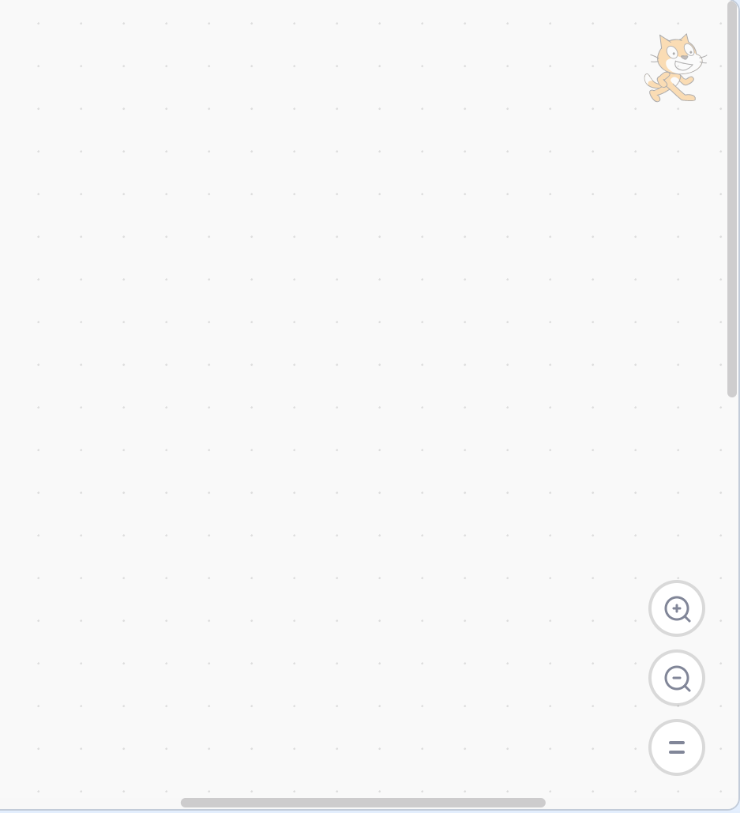
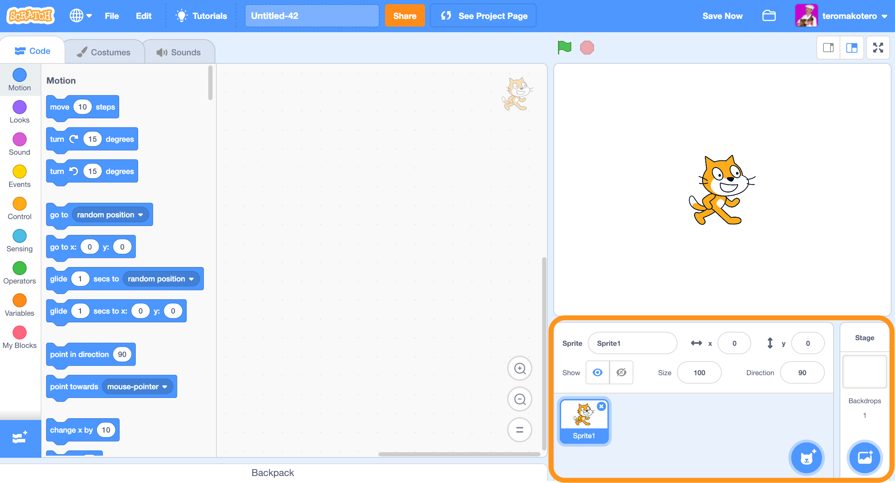

Code editor areas
In this course we use code editor available on the website scratch.mit.edu. The Scratch code editor is divided into different areas: Stage Area, Command Area, Code Area (Code / Costumes / Sound) and Sprite Area.
Stage
You see the end result of the project on the Stage. It is the background of the project. Sprites (which you have done yourself, downloaded or objects that you found in the library of Sprites and who perform different functions in a project) cannot move under the Stage. The Stage is always in the background. The Stage is also a Sprite.
There are two buttons on the Stage:
- Green flag
- Run the program if you use the block "when (green flag) clicked" in your code to run the project.
- Stop sign
- Stops the project.
Image of Stage Area

Command Area
You can drag blocks from the Command area to the Code area with the mouse and create your code. In the Command area you can create variables, lists and even create new blocks. The code area has 9 groups of blocks.

Image of Command Area
Code Area
You create your code in the Code area by dragging blocks from the Command area to the Code area.
Image of Code Area
Costumes
On the Costumes Tab you will find a list of costumes for the figure. You can edit the costumes with the Paint Editor. You can add new accessories from Scratch's built-in Sprite library, create new characters with the Paint Editor, import image files, or take pictures with your device.
Costumes Tab
Sound
On the Sound Tab you will find a list of audio clips. You can edit audio files with the Audio Editor. You can add new sounds to Scratch's built-in Audio Library, record your own audio or import an audio file from your device.
Sound Tab
Sprite Area
The Sprite Area contains a thumbnail image of all the Sprites that are already in the project. The Sprites can be those that you have done yourself, downloaded or found in the Sprite Library, and which perform functions in a project. You can add new Sprites to Scratch's embedded Library of Sprites, create new Sprites with the Paint Editor, import an image file, or take a picture with your device.
